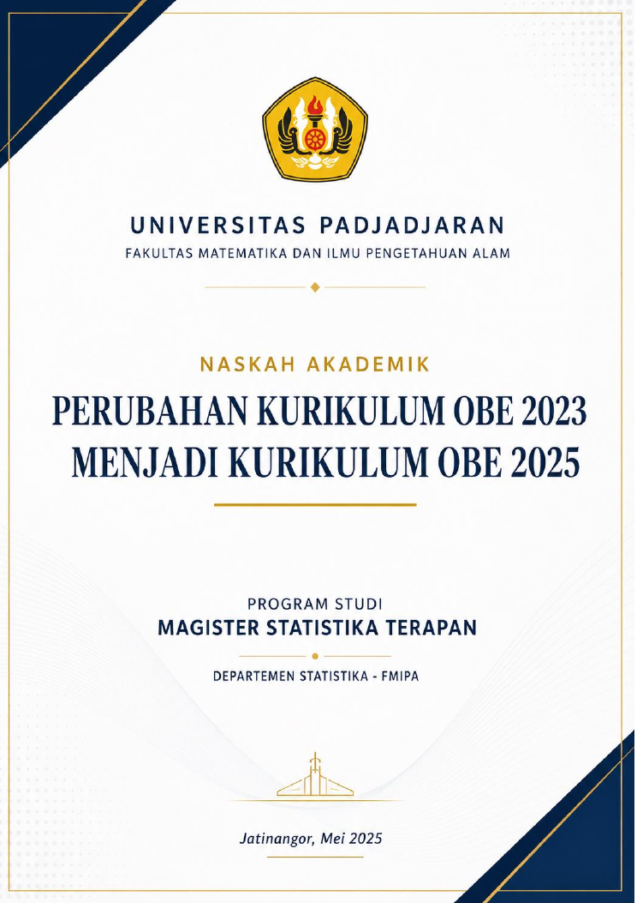
UNIVERSITAS PADJADJARAN
FAKULTAS
MATEMATIKA DAN ILMU
PENGETAHUAN
ALAM
NASKАН
АКADEMIK
PERUBAHAN
KURIKULUM
OBE
2023
MENJADI
KURIKULUM
OBE
2025
PROGRAM
STUDI
MAGISTER STATISTIKA
TERAPAN
DEPARTEMEN
STATISTIKA
-
FMIPA
Jatinangor,
Mei
2025
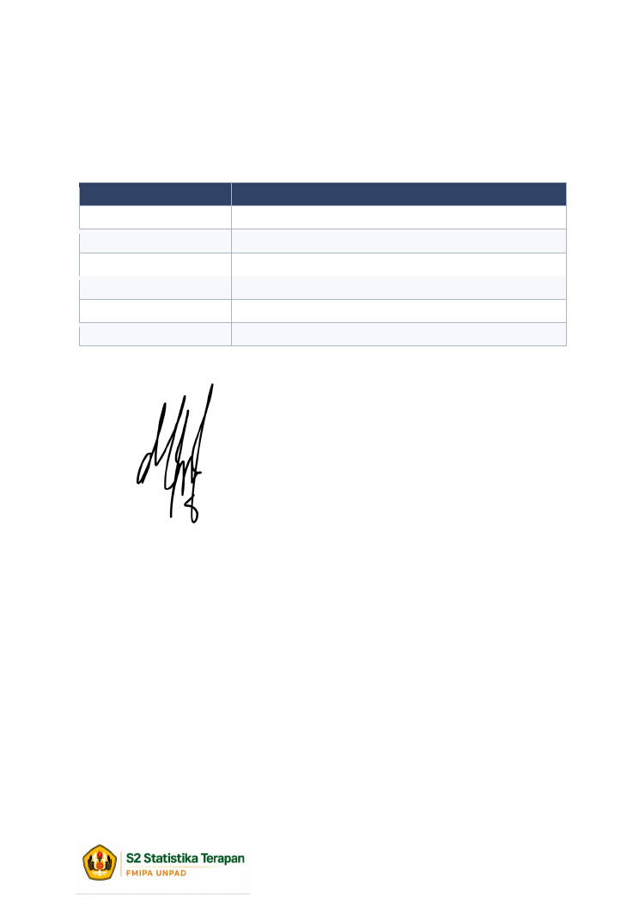
i
HALAMAN PENGESAHAN
Naskah Akademik Perubahan Kurikulum Outcome-Based Education (OBE) Tahun 2023 menjadi
Kurikulum OBE Tahun 2025 Program Studi Magister Statistika Terapan, Fakultas Matematika dan Ilmu
Pengetahuan Alam, Universitas Padjadjaran, disusun sebagai dasar akademik, yuridis, dan operasional
penetapan kurikulum baru.
Komponen
Keterangan
Nama Program Studi
Magister Statistika Terapan
Fakultas
Matematika dan Ilmu Pengetahuan Alam
Perguruan Tinggi
Universitas Padjadjaran
Jenjang KKNI
Level 8
Beban Kurikulum
54 SKS
Tanggal Penyusunan
23 Mei 2025
Ketua Tim Penyusun
Mengetahui,
Ketua Departemen Statistika
Dr. I Gede Nyoman Mindra Jaya, M.Si.
................................................
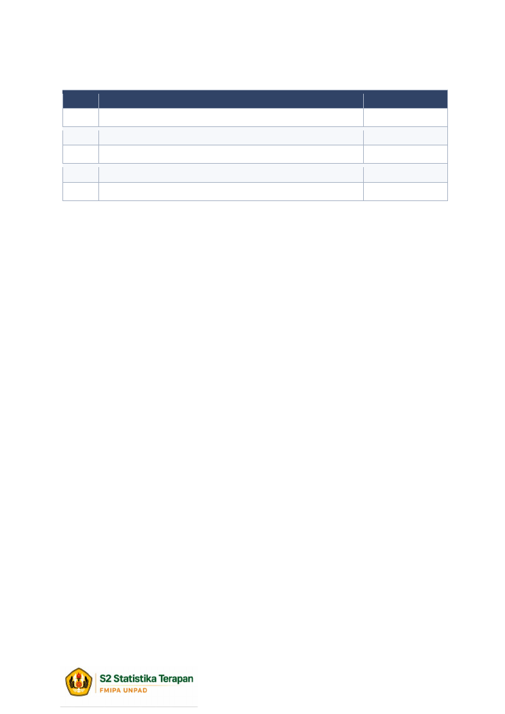
ii
TIM PENYUSUN
No.
Nama
Kedudukan
1
Dr. I Gede Nyoman Mindra Jaya, M.Si.
Ketua
2
Dr. Bertho Tantular, M.Si.
Anggota
3
Dr. Anindya Aprilianti Pravitasari, M.Si.
Anggota
4
Dr. Irlandia Ginanjar, M.Si.
Anggota
5
Dr. Gumgum Darmawan, M.Si.
Anggota
Penyusunan dilakukan melalui telaah regulasi, evaluasi Kurikulum OBE 2023, perbandingan dokumen
Kurikulum OBE 2025, analisis masukan pengguna lulusan dan alumni, serta benchmarking program
magister statistika nasional dan internasional.

iii
KATA PENGANTAR
Puji syukur ke hadirat Tuhan Yang Maha Esa atas rahmat dan karunia-Nya, sehingga Naskah
Akademik Perubahan Kurikulum OBE Tahun 2023 menjadi Kurikulum OBE Tahun 2025 Program Studi
Magister Statistika Terapan FMIPA Universitas Padjadjaran dapat disusun.
Perubahan kurikulum ini merupakan respons akademik dan institusional terhadap dinamika regulasi
pendidikan tinggi, perkembangan ilmu statistika dan sains data, serta kebutuhan masyarakat dan dunia
kerja. Permendikbudristek Nomor 53 Tahun 2023 menetapkan beban belajar program magister pada
rentang 54 sampai dengan 72 SKS. Ketentuan tersebut kemudian dioperasionalkan di Universitas
Padjadjaran melalui Peraturan Rektor Nomor 10 Tahun 2025, yang mengatur struktur minimum mata
kuliah, Seminar Usulan Riset, Seminar Kemajuan Riset, dan Sidang Akhir Magister.
Kurikulum OBE 2025 dirancang bukan sekadar menambah jumlah SKS, melainkan memperkuat
kedalaman kompetensi Level 8 KKNI. Perubahan mencakup kewajiban mata kuliah pilihan, penambahan
Seminar Kemajuan Riset sebagai quality gate tesis, pembakuan nomenklatur mata kuliah, dan penguatan
konsentrasi Sains Data. Masukan pengguna lulusan menunjukkan bahwa kompetensi teknis, relevansi,
komunikasi, dan kolaborasi lulusan telah dinilai baik hingga sangat baik, sementara kompetensi big data,
kecerdasan buatan, dan adaptasi teknologi masih memerlukan penguatan.
Terima kasih disampaikan kepada pimpinan fakultas dan departemen, dosen, tenaga kependidikan,
mahasiswa, alumni, pengguna lulusan, mitra, serta seluruh pihak yang memberikan data dan masukan.
Naskah akademik ini diharapkan menjadi dasar yang dapat ditelusuri, konsisten, dan dapat
dipertanggungjawabkan dalam penetapan serta implementasi Kurikulum OBE 2025.
Jatinangor, 23 Mei 2025
Tim Penyusun
iv
RINGKASAN EKSEKUTIF
Kurikulum OBE 2023 Program Studi Magister Statistika Terapan dibangun dengan beban minimum
36 SKS. Struktur operasionalnya terdiri atas 24 SKS mata kuliah wajib, Seminar Usulan Riset 3 SKS,
dan Tesis/Sidang Akhir Magister 9 SKS. Mata kuliah pilihan tersedia untuk penguatan bidang keahlian,
tetapi tidak menjadi komponen wajib dalam minimum 36 SKS. Kurikulum tersebut telah memiliki tujuh
CPL dan lima bidang terapan utama, termasuk Sains Data.
Perubahan regulasi menjadi pendorong langsung rekonstruksi kurikulum. Pasal 19
Permendikbudristek Nomor 53 Tahun 2023 menetapkan beban program magister 54-72 SKS dengan
masa tempuh kurikulum 3-4 semester. Pasal 24 dan Pasal 25 Peraturan Rektor Unpad Nomor 10 Tahun
2025 menegaskan rentang tersebut dan menetapkan komponen minimum untuk jalur coursework: mata
kuliah 36 SKS, SUR 3 SKS, SKR 6 SKS, dan SAM 9 SKS. Kurikulum OBE 2025 kemudian dirancang
dengan 24 SKS mata kuliah wajib, 12 SKS mata kuliah pilihan, dan 18 SKS rangkaian tesis, sehingga
totalnya tepat 54 SKS.
Evaluasi pengguna lulusan tahun 2024 melibatkan delapan responden. Seluruh responden menilai
kompetensi teknis, relevansi kurikulum, komunikasi, dan kepuasan pada kategori baik atau sangat baik.
Kolaborasi dinilai sangat baik oleh 87,5% responden. Namun, pada kompetensi big data, AI, dan IoT
terdapat 25% responden yang menilai pada kategori cukup; pada kemampuan adaptasi Society 5.0
terdapat 12,5% kategori cukup. Temuan ini mendukung penguatan Penambangan Data dan Kecerdasan
Buatan, Pembelajaran Mesin, Analisis Teks, Analisis Citra, Basis Data, serta integrasi etika dan
komunikasi data.
Perubahan substansial lainnya adalah penambahan SKR. SUR berfungsi memastikan kelayakan
pertanyaan penelitian dan metodologi; SKR memastikan kemajuan data, analisis, validasi, dan integritas
riset; SAM menilai kontribusi akhir tesis dan kemampuan mempertahankan argumen ilmiah. Dengan tiga
tahapan tersebut, mutu tesis tidak hanya dinilai pada awal dan akhir, tetapi dikendalikan selama proses
berlangsung.
Naskah ini merekomendasikan struktur 18-18-18 SKS selama tiga semester, mekanisme transisi
yang melindungi hak mahasiswa angkatan lama, matriks ekuivalensi mata kuliah, rubrik asesmen CPL
dan tesis, serta monitoring berbasis data. Ditemukan pula beberapa inkonsistensi pada dokumen sumber
yang perlu diharmonisasi sebelum pengesahan, terutama bobot SUR/tesis pada Kurikulum 2023,
penempatan SUR/SKR pada Kurikulum 2025, dan beberapa nomenklatur mata kuliah yang masih
menggunakan campuran bahasa.

v
DAFTAR ISI
BAB I PENDAHULUAN
.................................................................................................................................. 1
1.1 Latar Belakang
.............................................................................................................................................................. 1
1.2 Identifikasi Permasalahan
......................................................................................................................................... 2
1.3 Tujuan Penyusunan
..................................................................................................................................................... 2
1.4 Metode Penyusunan
.................................................................................................................................................... 2
BAB II LANDASAN PERUBAHAN KURIKULUM
............................................................................. 2
2.1 Landasan Filosofis
....................................................................................................................................................... 2
2.2 Landasan Sosiologis
................................................................................................................................................... 3
2.3 Landasan Yuridis
......................................................................................................................................................... 3
2.4 Landasan Pedagogis dan OBE
................................................................................................................................ 3
2.5 Landasan Akademik dan KKNI Level 8
.............................................................................................................. 3
BAB III EVALUASI KURIKULUM OBE 2023
....................................................................................... 4
3.1 Karakteristik Kurikulum OBE 2023
...................................................................................................................... 4
3.2 Kekuatan
......................................................................................................................................................................... 4
3.3 Kesenjangan dan Temuan Dokumen
..................................................................................................................... 4
3.4 Struktur Wajib Kurikulum 2023
............................................................................................................................. 4
BAB IV ANALISIS KEBUTUHAN PEMANGKU KEPENTINGAN DAN
BENCHMARKING
............................................................................................................................................. 5
4.1 Hasil Evaluasi Pengguna Lulusan
.......................................................................................................................... 5
4.2 Prospek Lulusan
........................................................................................................................................................... 6
4.3 Benchmarking
............................................................................................................................................................... 6
4.4 Kesiapan Sarana dan Layanan
................................................................................................................................. 6
BAB V PERBANDINGAN KURIKULUM OBE 2023 DAN OBE 2025
......................................... 6
5.1 Ringkasan Perubahan
................................................................................................................................................. 6
5.2 Perbandingan Beban Studi
........................................................................................................................................ 7
5.3 Perubahan Nomenklatur dan Kode
........................................................................................................................ 8
5.4 Perubahan Proses Tesis
.............................................................................................................................................. 8
5.5 Konsistensi Distribusi Semester
............................................................................................................................. 8
BAB VI RANCANGAN KURIKULUM OBE 2025
................................................................................ 9
6.1 Prinsip Rancangan
....................................................................................................................................................... 9
6.2 Struktur Kurikulum Jalur Coursework
................................................................................................................. 9

vi
6.3 Mata Kuliah Pilihan
................................................................................................................................................. 10
6.4 Penguatan Konsentrasi Sains Data
...................................................................................................................... 10
6.5 Jalur Magister Berbasis Riset
............................................................................................................................... 10
BAB VII PROFIL LULUSAN DAN CAPAIAN PEMBELAJARAN
............................................. 11
7.1 Profil Lulusan
............................................................................................................................................................. 11
7.2 Capaian Pembelajaran Lulusan
............................................................................................................................ 11
7.3 Matriks CPL-Mata Kuliah
..................................................................................................................................... 12
BAB VIII STRATEGI PEMBELAJARAN DAN ASESMEN
........................................................... 12
8.1 Strategi Pembelajaran
.............................................................................................................................................. 12
8.2 Asesmen Mata Kuliah
............................................................................................................................................. 12
8.3 Asesmen SUR-SKR-SAM
..................................................................................................................................... 12
8.4 Integrasi AI Generatif
.............................................................................................................................................. 12
BAB IX IMPLEMENTASI, TRANSISI, DAN PENJAMINAN MUTU
........................................ 13
9.1 Prinsip Transisi
.......................................................................................................................................................... 13
9.2 Ekuivalensi Mata Kuliah
........................................................................................................................................ 13
9.3 Rencana Implementasi
............................................................................................................................................ 13
9.4 Monitoring dan Evaluasi
........................................................................................................................................ 13
9.5 Pengendalian Dokumen
.......................................................................................................................................... 14
BAB X PENUTUP
............................................................................................................................................ 14
10.1 Kesimpulan
............................................................................................................................................................... 14
10.2 Rekomendasi
............................................................................................................................................................ 14
10.3 Informasi yang Memerlukan Konfirmasi Formal
........................................................................................ 15
DAFTAR PUSTAKA DAN DOKUMEN RUJUKAN
.......................................................................... 15
LAMPIRAN A. MATRIKS EKUIVALENSI MATA KULIAH
....................................................... 17
LAMPIRAN B. CATATAN AUDIT DOKUMEN
................................................................................ 18
LAMPIRAN C. RINGKASAN KEPUTUSAN YANG DIUSULKAN
........................................... 18

vii
DAFTAR TABEL
Tabel 1. Dokumen yang dianalisis
Tabel 2. Dasar hukum perubahan kurikulum
Tabel 3. Temuan evaluasi Kurikulum OBE 2023
Tabel 4. Ringkasan masukan pengguna lulusan
Tabel 5. Ringkasan benchmarking
Tabel 6. Perubahan utama Kurikulum OBE 2023-2025
Tabel 7. Perbandingan beban studi
Tabel 8. Struktur wajib Kurikulum OBE 2023
Tabel 9. Struktur Kurikulum OBE 2025
Tabel 10. Perbandingan tahapan tesis
Tabel 11. Penguatan konsentrasi Sains Data
Tabel 12. Perubahan CPL
Tabel 13. Perubahan profil lulusan
Tabel 14. Rencana implementasi
Tabel 15. Indikator monitoring dan evaluasi
Tabel 16. Informasi yang perlu dikonfirmasi
Lampiran Tabel A. Matriks ekuivalensi mata kuliah
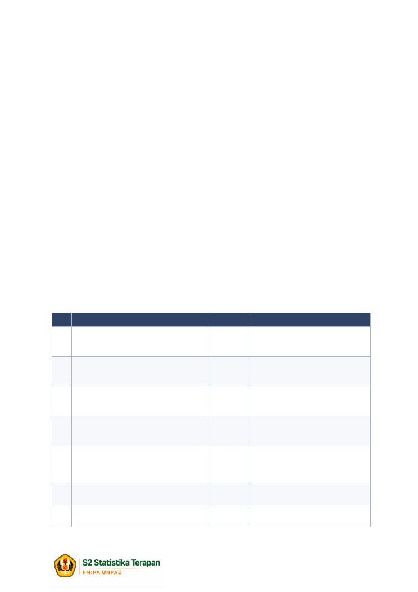
1
BAB I PENDAHULUAN
1.1 Latar Belakang
Program Studi Magister Statistika Terapan FMIPA Universitas Padjadjaran memiliki mandat untuk
menghasilkan lulusan yang mampu mengembangkan dan menerapkan metodologi statistika pada
persoalan kompleks di bidang bisnis dan industri, sosial, aktuaria, biostatistika, serta sains data. Mandat
tersebut menuntut kurikulum yang tidak hanya relevan pada saat ditetapkan, tetapi juga mampu
merespons perubahan regulasi, perkembangan ilmu, transformasi digital, dan kebutuhan pengguna
lulusan.
Kurikulum OBE 2023 merupakan pengembangan kurikulum sebelumnya dan telah
mengintegrasikan profil lulusan, CPL, bahan kajian, mata kuliah, dan asesmen berbasis outcome. Struktur
minimum 36 SKS memberikan fondasi teori dan komputasi, dua mata kuliah modern wajib, serta tahapan
SUR dan tesis. Walaupun demikian, perkembangan kebijakan nasional mengubah kerangka beban belajar
program magister. Permendikbudristek Nomor 53 Tahun 2023 menetapkan rentang 54-72 SKS,
sedangkan Peraturan Rektor Unpad Nomor 10 Tahun 2025 menetapkan komponen minimum yang lebih
rinci.
Perubahan tersebut tidak dapat dipenuhi hanya dengan menambahkan angka kredit secara
administratif. Tambahan beban harus diterjemahkan menjadi pengalaman belajar yang memperdalam
kemampuan Level 8 KKNI, memperkuat fleksibilitas bidang terapan, meningkatkan kendali mutu tesis,
dan menjaga keterhubungan antara CPL, mata kuliah, pembelajaran, serta asesmen. Oleh karena itu,
penyusunan Kurikulum OBE 2025 dilakukan melalui evaluasi dokumen, masukan pemangku
kepentingan, benchmarking, dan analisis kebutuhan kompetensi masa depan.
Tabel 1. Dokumen yang dianalisis
No.
Dokumen
Tahun
Kegunaan
1
Kurikulum OBE 2023 Program Studi Magister
Statistika Terapan
2023
Dokumen dasar untuk profil lulusan, CPL,
bahan kajian, mata kuliah, dan struktur 36
SKS.
2
Rancangan Kurikulum OBE 2025 Program Studi
Magister Statistika Terapan
2025
Dokumen rancangan struktur 54 SKS, jalur
coursework/by research, SKR, nomenklatur
mata kuliah, dan silabus.
3
Permendikbudristek Nomor 53 Tahun 2023
2023
Dasar nasional penjaminan mutu; Pasal 19
menetapkan beban magister 54-72 SKS dan
masa tempuh 3-4 semester.
4
Peraturan Rektor Universitas Padjadjaran Nomor 10
Tahun 2025
2025
Pasal 24-26 mengatur 54-72 SKS dan
komponen minimum coursework maupun by
research.
5
Evaluasi Kurikulum 2023 oleh Pengguna Lulusan
2024
Data delapan pengguna lulusan mengenai
kompetensi teknis, relevansi, komunikasi,
kolaborasi, AI/Big Data/IoT, adaptasi,
kepuasan, dan rekomendasi.
6
Benchmarking Report Program Magister Statistika
Terapan
2024
Perbandingan dengan Oxford, Harvard,
Stanford, NUS serta program sejenis nasional.
7
Alumni Job Prospects
2024
Konfirmasi prospek utama: praktisi, akademisi,
dan peneliti.
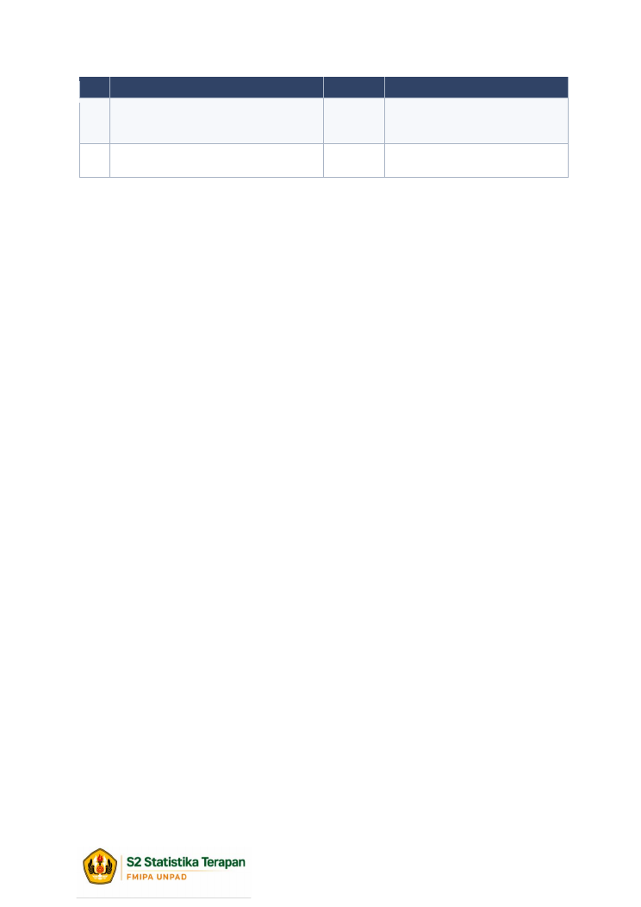
2
No.
Dokumen
Tahun
Kegunaan
8
Laporan Kepuasan Sarana, Prasarana, dan Layanan
Akademik
2024
Dukungan terhadap peningkatan fasilitas
komputasi, sumber belajar, bimbingan
akademik, dan layanan penelitian.
9
Dokumen Learning Outcomes dan Tujuan Program
Studi
2024
Bahan penyelarasan CPL, profil lulusan, PEO,
dan KKNI Level 8.
Sumber: Dokumen yang diunggah dan dianalisis oleh tim penyusun.
1.2 Identifikasi Permasalahan
1.
Kurikulum OBE 2023 belum memenuhi beban belajar 54-72 SKS sebagaimana ditetapkan regulasi
tahun 2023 dan 2025.
2.
Kurikulum 2023 belum memiliki Seminar Kemajuan Riset sebagai tahapan formal pengendalian
kemajuan tesis.
3.
Mata kuliah pilihan belum menjadi komponen wajib dalam beban minimum sehingga kedalaman
bidang terapan dapat berbeda antar mahasiswa.
4.
Sebagian nomenklatur mata kuliah masih menggunakan bahasa Inggris atau campuran bahasa dan
belum konsisten.
5.
Masukan pengguna lulusan menunjukkan perlunya penguatan big data, AI, teknologi, komunikasi
data, dan adaptasi Society 5.0.
6.
Dokumen sumber mengandung inkonsistensi antar tabel yang harus direkonsiliasi sebelum
kurikulum ditetapkan.
1.3 Tujuan Penyusunan
Menyediakan landasan filosofis, sosiologis, yuridis, pedagogis, dan akademik bagi perubahan
kurikulum.
Mendokumentasikan evaluasi Kurikulum OBE 2023 dan kebutuhan pemangku kepentingan.
Menjelaskan perubahan beban studi, struktur mata kuliah, nomenklatur, konsentrasi, CPL, profil
lulusan, dan proses tesis.
Menyusun mekanisme implementasi, ekuivalensi, transisi, pembelajaran, asesmen, dan penjaminan
mutu Kurikulum OBE 2025.
1.4 Metode Penyusunan
Penyusunan menggunakan metode telaah dokumen dan analisis komparatif. Setiap informasi pada
Kurikulum 2023 dan 2025 dibandingkan berdasarkan kode, nama, bobot, status, semester, bahan kajian,
dan kontribusinya terhadap CPL. Data survei dianalisis secara deskriptif, sedangkan benchmarking
digunakan untuk mengidentifikasi pola kompetensi yang konsisten pada program magister statistika
bereputasi. Temuan yang tidak konsisten tidak diselesaikan dengan asumsi diam-diam, tetapi dicatat
sebagai agenda konfirmasi formal.
BAB II LANDASAN PERUBAHAN KURIKULUM
2.1 Landasan Filosofis
Pendidikan magister statistika berorientasi pada pengembangan kemampuan berpikir kritis,
sistematis, reflektif, dan bertanggung jawab dalam menghasilkan serta menggunakan pengetahuan.
Statistika tidak diposisikan semata sebagai perangkat perhitungan, tetapi sebagai disiplin inferensial yang
menghubungkan data, ketidakpastian, bukti, dan keputusan. Karena itu, kurikulum harus menjaga
keseimbangan antara teori, komputasi, aplikasi, etika, dan dampak sosial.
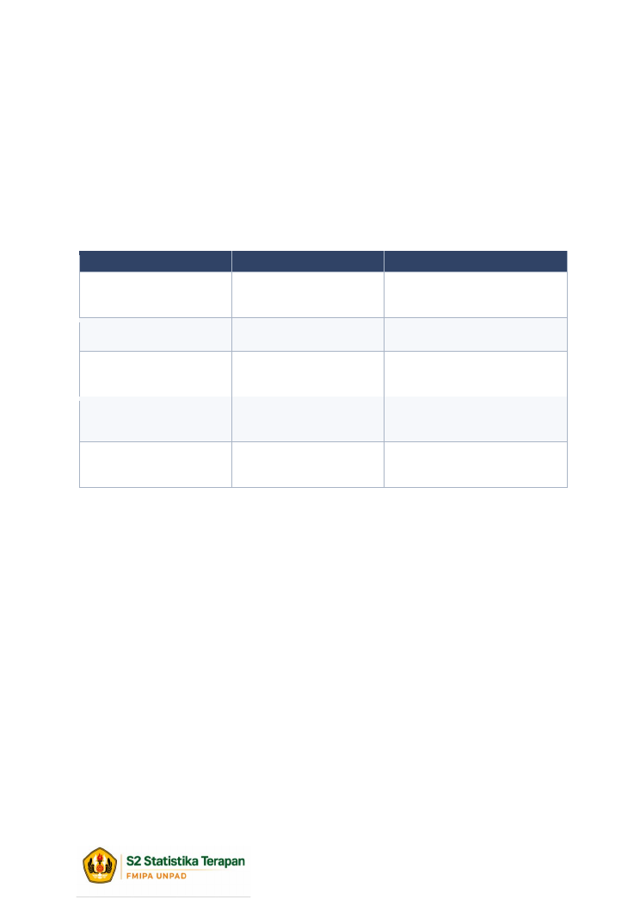
3
2.2 Landasan Sosiologis
Masyarakat dan organisasi menghadapi peningkatan volume, variasi, dan kecepatan data.
Pemerintah, industri, layanan kesehatan, keuangan, dan lembaga penelitian membutuhkan lulusan yang
mampu merancang data, membangun model, mengevaluasi ketidakpastian, mengomunikasikan hasil, dan
memastikan penggunaan data yang bertanggung jawab. Penguatan Sains Data dalam kurikulum
merupakan respons terhadap kebutuhan tersebut, tetapi tetap ditempatkan di atas fondasi teori statistika
agar lulusan tidak sekadar menjadi pengguna algoritma.
2.3 Landasan Yuridis
Tabel 2. Dasar hukum perubahan kurikulum
Regulasi
Pokok Pengaturan
Implikasi Kurikulum
Undang-Undang Nomor 12 Tahun
2012
Pendidikan Tinggi
Menetapkan kerangka penyelenggaraan
pendidikan tinggi dan kewajiban penjaminan
mutu.
Peraturan Presiden Nomor 8 Tahun
2012
Kerangka Kualifikasi Nasional
Indonesia
Menempatkan lulusan magister pada KKNI
Level 8.
Permendikbudristek Nomor 53 Tahun
2023
Penjaminan Mutu Pendidikan Tinggi
Pasal 19: program magister/magister terapan
54-72 SKS dengan masa tempuh kurikulum 3-
4 semester.
Peraturan Rektor Unpad Nomor 43
Tahun 2021
Kerangka Kurikulum Universitas
Padjadjaran
Menjadi rujukan penerapan kurikulum OBE
dan penyelarasan CPL, CPMK, pembelajaran,
dan asesmen.
Peraturan Rektor Unpad Nomor 10
Tahun 2025
Penyelenggaraan Pendidikan Program
Magister
Pasal 24: 54-72 SKS; Pasal 25: mata kuliah
minimum 36 SKS, SUR 3 SKS, SKR 6 SKS,
dan SAM 9 SKS.
Sumber: Dokumen regulasi nasional dan Universitas Padjadjaran.
Catatan koreksi: dasar regulasi nasional yang digunakan adalah Peraturan Menteri Pendidikan,
Kebudayaan, Riset, dan Teknologi Nomor 53 Tahun 2023, bukan Nomor 52 Tahun 2023. Judul resminya
adalah Penjaminan Mutu Pendidikan Tinggi.
2.4 Landasan Pedagogis dan OBE
Outcome-Based Education menempatkan CPL sebagai titik awal desain kurikulum. Profil lulusan
diterjemahkan menjadi CPL; CPL dipetakan ke bahan kajian dan mata kuliah; setiap mata kuliah
memiliki CPMK, aktivitas pembelajaran, dan asesmen yang dapat menunjukkan ketercapaian outcome.
Perubahan jumlah SKS dengan demikian harus diikuti perubahan pengalaman belajar dan bukti asesmen,
bukan hanya perubahan administrasi.
Pembelajaran pada Kurikulum OBE 2025 diarahkan pada student-centered learning, case-based
learning, project-based learning, research-based learning, praktik komputasi, peer review, dan presentasi
ilmiah. Asesmen mengombinasikan penilaian langsung melalui tugas, proyek, ujian, kode, laporan, dan
tesis dengan penilaian tidak langsung melalui survei mahasiswa, alumni, dan pengguna lulusan.
2.5 Landasan Akademik dan KKNI Level 8
Pada Level 8 KKNI, lulusan magister diharapkan mampu mengembangkan pengetahuan atau praktik
profesional melalui riset, memecahkan masalah interdisipliner atau multidisipliner, serta mengelola riset
dan pengembangan yang bermanfaat. Struktur 54 SKS memberi ruang lebih besar untuk pilihan bidang,
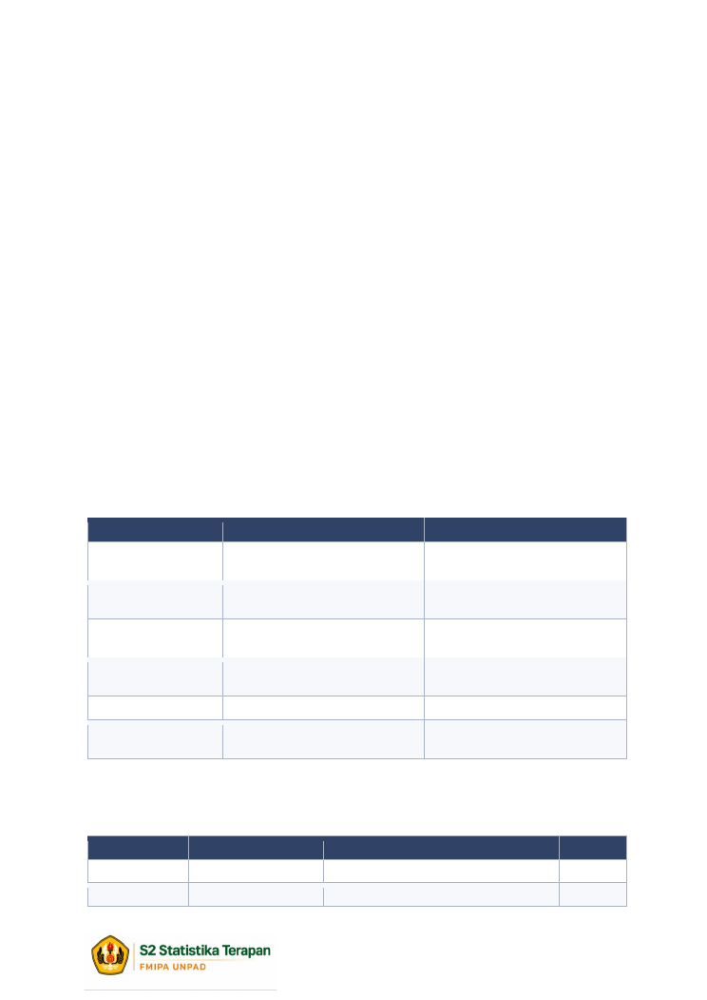
4
praktik penelitian berjenjang, dan integrasi kompetensi komputasi modern tanpa mengurangi kedalaman
teori.
BAB III EVALUASI KURIKULUM OBE 2023
3.1 Karakteristik Kurikulum OBE 2023
Kurikulum OBE 2023 memiliki tujuh CPL dan delapan bahan kajian. Profil lulusan meliputi
akademisi, peneliti, konsultan, dan praktisi. Bidang kajian terapan mencakup bisnis-industri, sosial,
aktuaria, biostatistika, dan sains data. Struktur minimum 36 SKS terdiri atas enam mata kuliah fondasi
pada semester I, dua mata kuliah modern pada semester II, SUR, dan tesis. Mata kuliah pilihan tersedia
untuk memperluas keahlian, tetapi belum diwajibkan dalam komponen minimum.
3.2 Kekuatan
Fondasi teori dan metode lanjut yang kuat melalui inferensi, regresi, multivariat, proses stokastik,
deret waktu, serta komputasi dan optimasi.
Identitas statistika terapan yang luas, mencakup domain sosial, industri, aktuaria, kesehatan, dan
sains data.
Tujuh CPL yang telah mengintegrasikan pengetahuan, desain data, analisis, komputasi, riset,
jejaring, dan etika.
Penilaian pengguna lulusan yang secara umum baik hingga sangat baik pada kompetensi teknis,
relevansi, komunikasi, kolaborasi, dan kepuasan.
3.3 Kesenjangan dan Temuan Dokumen
Tabel 3. Temuan evaluasi Kurikulum OBE 2023
Aspek
Kondisi 2023
Implikasi
Beban belajar
36 SKS
Tidak sesuai dengan rentang 54-72 SKS
pada regulasi terbaru.
Proses tesis
SUR dan SAM/Tesis
Belum terdapat quality gate formal untuk
kemajuan riset.
Mata kuliah pilihan
Tersedia tetapi tidak wajib dalam minimum
36 SKS
Kedalaman bidang terapan berpotensi tidak
seragam.
Kompetensi AI/Big Data
Sudah tersedia mata kuliah terkait
Masih ada 25% pengguna yang menilai
kompetensi pada kategori cukup.
Nomenklatur
Campuran Indonesia-Inggris
Memerlukan pembakuan.
Konsistensi dokumen
Bobot SUR/tesis berbeda antar tabel
Perlu harmonisasi dan penetapan satu
sumber resmi.
Sumber: Analisis dokumen Kurikulum OBE 2023 dan regulasi terbaru.
3.4 Struktur Wajib Kurikulum 2023
Tabel 8. Struktur wajib Kurikulum OBE 2023
Semester
Kode
Mata Kuliah
SKS
Semester I
D20B.101
Statistik Inferensi
3
Semester I
D20B.102
Analisis Data Multivariat Tingkat Lanjut
3
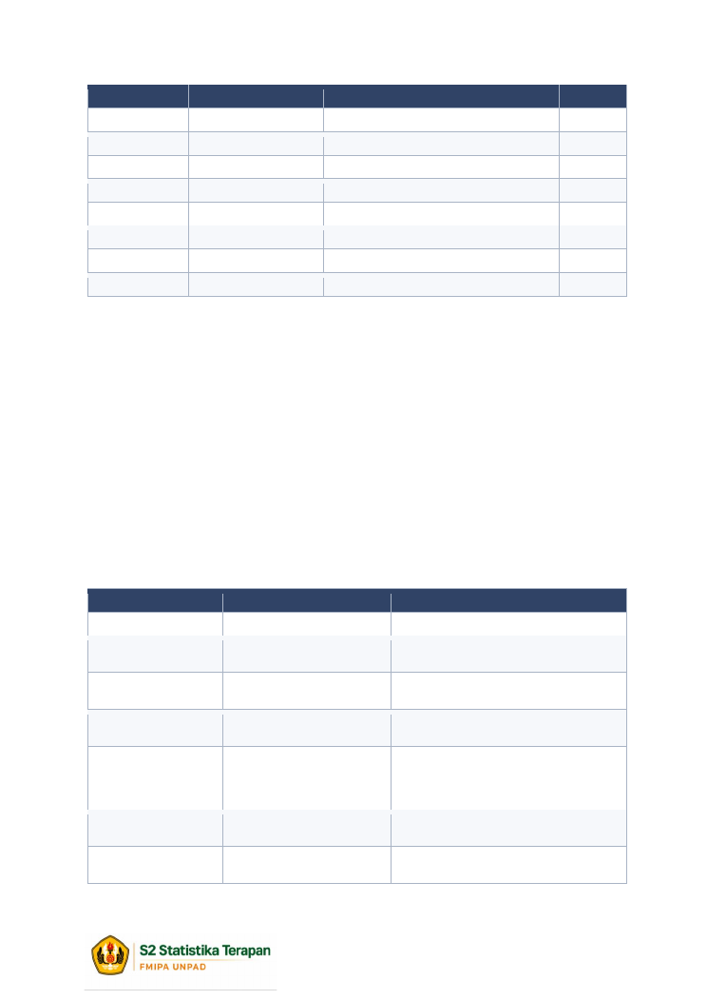
5
Semester
Kode
Mata Kuliah
SKS
Semester I
D20B.103
Analisis Regresi Tingkat Lanjut
3
Semester I
D20B.104
Proses Stokastik Tingkat Lanjut
3
Semester I
D20B.105
Komputasi Statistik dan Optimasi
3
Semester I
D20B.107
Analisis Data Deret Waktu Tingkat Lanjut
3
Semester II
D20B.210
Statistika Non Parametrik dan Flexible Modeling
3
Semester II
D20B.220
Data Mining and Artificial Intelligence
3
Semester III
D20B.321
Seminar Usulan Riset
3
Semester III
D20B.322
Tesis/Sidang Akhir Magister
9
Sumber: Struktur akhir Kurikulum OBE 2023; total minimum 36 SKS.
Dokumen Kurikulum 2023 juga memuat tabel daftar mata kuliah yang menuliskan SUR 2 SKS dan
tesis 6 SKS. Namun, tabel struktur akhir dan total minimum 36 SKS menggunakan SUR 3 SKS serta tesis
9 SKS. Naskah ini menggunakan struktur akhir sebagai representasi implementasi dan mencatat
perbedaan tersebut untuk koreksi dokumenter.
BAB IV ANALISIS KEBUTUHAN PEMANGKU
KEPENTINGAN DAN BENCHMARKING
4.1 Hasil Evaluasi Pengguna Lulusan
Evaluasi pengguna lulusan tahun 2024 melibatkan delapan institusi, dengan 50% responden berasal
dari Badan Pusat Statistik dan sisanya dari bank bjb, Direktorat Jenderal Pajak, LK3P UI, serta TEEG
Indonesia. Jumlah responden relatif terbatas, sehingga hasil dibaca sebagai sinyal pengembangan, bukan
estimasi populasi yang presisi.
Tabel 4. Ringkasan masukan pengguna lulusan
Aspek
Hasil
Implikasi
Kompetensi teknis
50,0% baik; 50,0% sangat baik
Fondasi metodologis dipertahankan dan diperkuat.
Relevansi kurikulum terhadap
pekerjaan
62,5% baik; 37,5% sangat baik
Mata kuliah terapan tetap relevan; proyek berbasis
kasus nyata perlu ditingkatkan.
Komunikasi
50,0% baik; 50,0% sangat baik
Presentasi, penulisan, dan komunikasi hasil analisis
dipertahankan sebagai kompetensi lintas mata kuliah.
Kolaborasi
12,5% baik; 87,5% sangat baik
Kurikulum perlu mempertahankan pembelajaran
kolaboratif dan keterlibatan mitra.
Big Data, AI, dan IoT
25,0% menilai cukup; masing-masing
37,5% baik dan sangat baik
Menjadi celah kompetensi paling nyata; memperkuat
Penambangan Data dan Kecerdasan Buatan,
Pembelajaran Mesin, Analisis Teks/Citra, dan Basis
Data.
Adaptasi terhadap Society 5.0
12,5% menilai cukup; 50,0% baik;
37,5% sangat baik
Memerlukan pembelajaran yang adaptif, literasi
teknologi, dan pembelajaran sepanjang hayat.
Kepuasan pengguna
62,5% baik; 37,5% sangat baik
Kurikulum 2023 memiliki fondasi kuat dan layak
dikembangkan, bukan diganti tanpa kesinambungan.
Sumber: Evaluasi Kurikulum S2 Statistika Terapan oleh pengguna lulusan, 2024 (n=8).
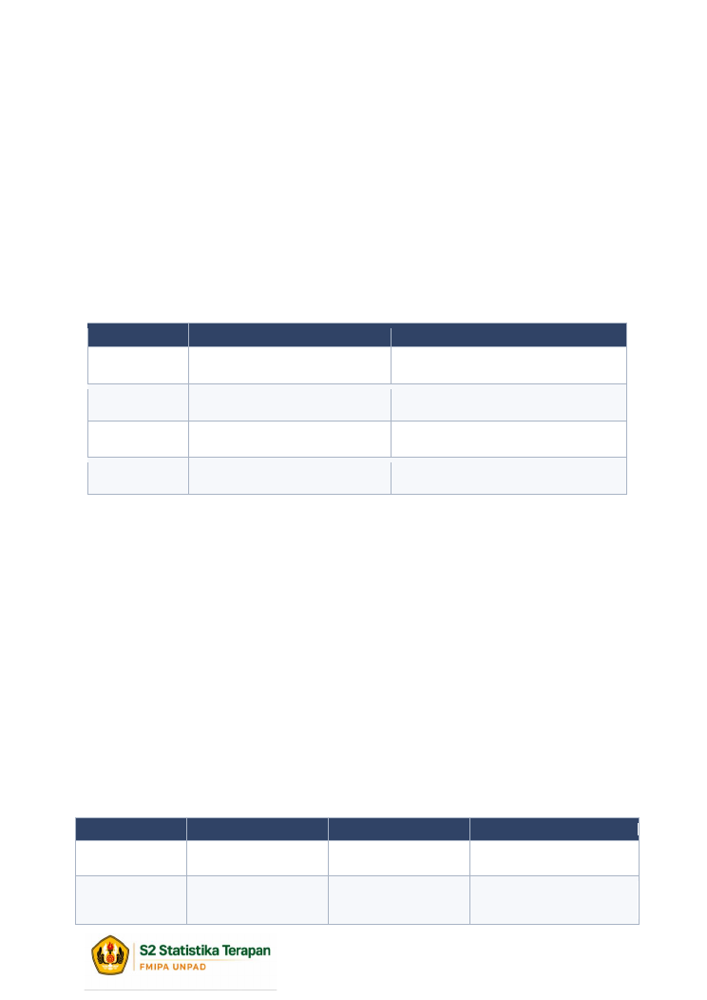
6
Word cloud pada laporan masukan pemangku kepentingan menonjolkan istilah data, komunikasi,
analisis, teknologi, pemahaman, metode, kerja, dan kuliah. Interpretasi yang paling konsisten adalah
kebutuhan untuk memperkuat kemampuan teknis sekaligus kemampuan menerjemahkan analisis menjadi
informasi yang dapat digunakan oleh pemangku kepentingan.
4.2 Prospek Lulusan
Dokumen Alumni Job Prospects mengelompokkan prospek lulusan ke dalam praktisi, akademisi,
dan peneliti. Dokumen benchmarking nasional memperluasnya dengan peran konsultan serta
kemungkinan studi lanjut. Kurikulum 2025 mempertahankan fleksibilitas tersebut dengan menyediakan
core bersama dan mata kuliah pilihan lintas bidang.
4.3 Benchmarking
Tabel 5. Ringkasan benchmarking
Program
Fokus yang Relevan
Pelajaran bagi Unpad
Oxford
Teori statistika lanjut, metode terapan,
komputasi statistik
Mempertahankan core teori-metodologi dan komputasi
yang kuat.
Harvard
Biostatistika, desain dan analisis studi,
komputasi biologi
Memperkuat jalur biostatistika/kesehatan melalui
epidemiologi, survival, spasial, dan model longitudinal.
Stanford
Teori dan aplikasi, sains data, biostatistika,
statistika finansial
Mengembangkan pilihan lintas domain dan
kemampuan menangani data kompleks.
NUS
Teori, aplikasi industri, komputasi,
pengambilan keputusan berbasis data
Menjaga fleksibilitas mata kuliah pilihan dan orientasi
problem solving.
Sumber: Benchmarking Report Program Magister Statistika Terapan, 2024.
Benchmarking menunjukkan pola yang konsisten: program magister statistika bereputasi
mempertahankan teori yang kuat, komputasi, aplikasi lintas domain, kemampuan menangani data
kompleks, dan komunikasi hasil. Penguatan Sains Data pada Kurikulum 2025 karena itu tidak
menggantikan statistika, melainkan memperluas cara statistika diterapkan pada data modern.
4.4 Kesiapan Sarana dan Layanan
Laporan kepuasan sarana, prasarana, dan layanan akademik menekankan pentingnya ruang belajar,
laboratorium, perangkat lunak, sumber daya komputasi, perpustakaan, bimbingan akademik, mentoring,
dan layanan karier. Implementasi kurikulum 54 SKS harus disertai kapasitas komputasi, lisensi atau
perangkat lunak open source, akses jurnal, pengelolaan data, dan sistem pemantauan tesis.
BAB V PERBANDINGAN KURIKULUM OBE 2023 DAN OBE
2025
5.1 Ringkasan Perubahan
Tabel 6. Perubahan utama Kurikulum OBE 2023-2025
Aspek
Kurikulum 2023
Kurikulum 2025
Rasional
Beban studi
Minimum 36 SKS
54 SKS
Kepatuhan Permendikbudristek 53/2023
dan Peraturan Rektor Unpad 10/2025.
Komponen coursework
24 SKS wajib; tidak ada
kewajiban pilihan dalam
minimum 36 SKS
24 SKS wajib + 12 SKS pilihan
Memperluas kedalaman bidang terapan
sekaligus memberikan fleksibilitas
konsentrasi.
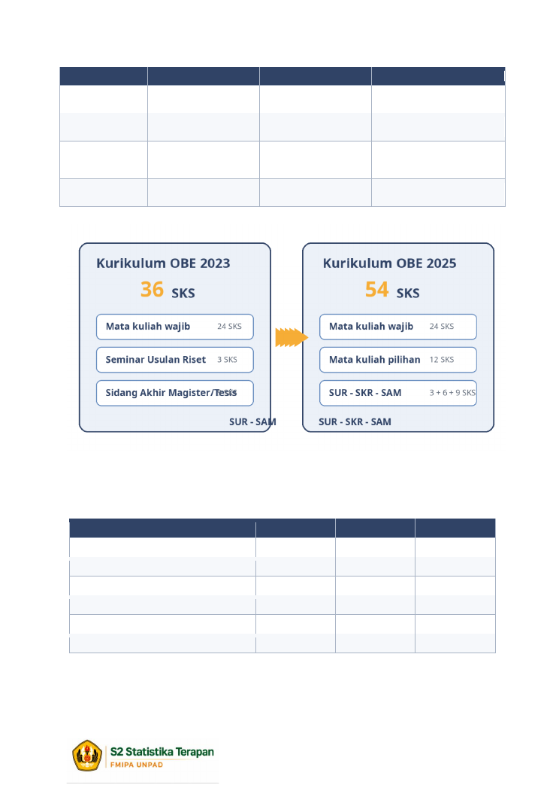
7
Aspek
Kurikulum 2023
Kurikulum 2025
Rasional
Tahapan tesis
SUR 3 SKS dan Tesis/SAM 9
SKS
SUR 3 SKS, SKR 6 SKS, SAM 9
SKS
Menambahkan quality gate kemajuan
penelitian.
Nomenklatur
Sebagian mata kuliah berbahasa
Inggris/campuran
Lebih banyak menggunakan
bahasa Indonesia
Konsistensi nomenklatur dan keterbacaan
akademik.
Sains Data
Sudah menjadi bahan kajian,
tetapi belum dinyatakan kuat
sebagai paket konsentrasi
Diperkuat melalui mata kuliah AI,
ML, analisis teks/citra, basis data,
dan komputasi
Menjawab kebutuhan pengguna lulusan
dan perkembangan profesi.
Jalur pendidikan
Berfokus pada struktur berbasis
kuliah
Coursework dan by research
dirumuskan lebih eksplisit
Memberi alternatif lintasan belajar sesuai
orientasi profesional/riset.
Sumber: Analisis komparatif dokumen kurikulum.
Gambar 1. Transformasi struktur minimum 36 SKS menjadi 54 SKS
5.2 Perbandingan Beban Studi
Tabel 7. Perbandingan beban studi
Komponen
2023 (SKS)
2025 (SKS)
Perubahan
Mata kuliah wajib
24
24
0
Mata kuliah pilihan wajib ditempuh
0
12
+12
Seminar Usulan Riset
3
3
0
Seminar Kemajuan Riset
0
6
+6
Sidang Akhir Magister/Tesis
9
9
0
Total minimum
36
54
+18
Sumber: Struktur minimum jalur coursework.
Tambahan 18 SKS tidak berasal dari penambahan mata kuliah wajib inti. Dua belas SKS berasal
dari kewajiban menempuh empat mata kuliah pilihan, sedangkan enam SKS berasal dari SKR. Dengan
rancangan tersebut, fondasi kurikulum lama dipertahankan dan tambahan beban diarahkan pada
spesialisasi serta mutu penelitian.
8
5.3 Perubahan Nomenklatur dan Kode
Seluruh kode mata kuliah diubah dari format D20B.xxx menjadi format kode universitas 140720-
UND.... Perubahan nama diarahkan pada penggunaan bahasa Indonesia, penyederhanaan frasa, dan
penegasan substansi. Contoh utamanya adalah Statistik Inferensi menjadi Statistika Inferensial, Structural
Equation Modeling menjadi Pemodelan Persamaan Struktural, Data Mining and Artificial Intelligence
menjadi Penambangan Data dan Kecerdasan Buatan, dan Machine Learning menjadi Pembelajaran
Mesin. Matriks lengkap disajikan pada Lampiran A.
5.4 Perubahan Proses Tesis
Tabel 10. Perbandingan tahapan tesis pada Kurikulum OBE 2025
Tahap
SKS
Fungsi
Keluaran
SUR
3
Menilai kelayakan masalah, kebaruan, tujuan, metodologi,
data, etika, jadwal, dan kesiapan pembimbingan.
Proposal yang layak dan rencana
perbaikan.
SKR
6
Memastikan data tersedia, metode diterapkan dengan benar,
analisis dan validasi berjalan, hambatan teridentifikasi,
serta penelitian layak dilanjutkan.
Laporan kemajuan, hasil analisis awal,
logbook, dan rencana menuju SAM.
SAM
9
Menilai kontribusi akhir, ketepatan metode, kualitas hasil,
argumentasi ilmiah, integritas, dan kemampuan diseminasi.
Tesis final, keputusan kelulusan, dan
tindak lanjut publikasi.
Sumber: Kurikulum OBE 2025 dan analisis quality gate penelitian.
Penambahan SKR adalah perubahan mutu yang paling mendasar. Pada struktur 2023, evaluasi
formal terjadi pada proposal dan akhir tesis. Struktur 2025 menambahkan evaluasi di tengah proses
sehingga risiko keterlambatan, ketidaksesuaian metode, masalah data, dan rendahnya kualitas analisis
dapat diidentifikasi lebih dini.
5.5 Konsistensi Distribusi Semester
Diagram utama Kurikulum 2025 menunjukkan distribusi 18 SKS pada setiap semester: semester I
berisi fondasi wajib, semester II berisi dua mata kuliah wajib dan empat pilihan, serta semester III berisi
rangkaian tesis 18 SKS. Namun, tabel pemetaan tertentu menempatkan SUR dan SKR pada semester II.
Sebelum pengesahan, program studi perlu menetapkan satu representasi resmi. Naskah ini
merekomendasikan struktur 18-18-18 sebagai struktur kurikulum, dengan kegiatan persiapan topik dan
pembimbing dapat dimulai sejak semester II tanpa menimbulkan duplikasi registrasi.
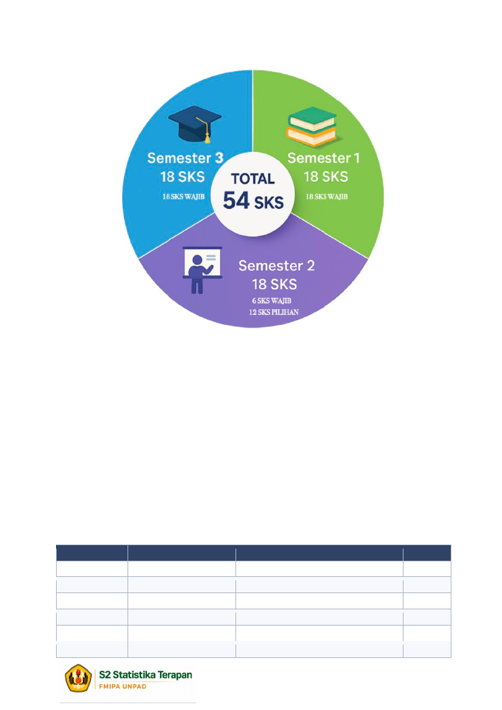
9
Gambar 2. Distribusi 54 SKS Kurikulum OBE 2025
BAB VI RANCANGAN KURIKULUM OBE 2025
6.1 Prinsip Rancangan
Kepatuhan terhadap regulasi 54-72 SKS dan masa tempuh 3-4 semester.
Backward design dari profil lulusan dan CPL menuju mata kuliah, CPMK, pembelajaran, dan
asesmen.
Fondasi teori dan komputasi yang sama untuk seluruh mahasiswa.
Fleksibilitas melalui empat mata kuliah pilihan yang membentuk paket keahlian yang koheren.
Penelitian tesis yang dikendalikan melalui SUR-SKR-SAM.
Penguatan Sains Data yang tetap berakar pada inferensi statistik, validasi, dan etika.
6.2 Struktur Kurikulum Jalur Coursework
Tabel 9. Struktur Kurikulum OBE 2025
Semester
Kode/Status
Mata Kuliah/Komponen
SKS
Semester I
140720-UND202511001
Statistika Inferensial
3
Semester I
140720-UND202511002
Komputasi Statistik dan Optimasi
3
Semester I
140720-UND202511003
Analisis Multivariat Tingkat Lanjut
3
Semester I
140720-UND202511004
Analisis Regresi Tingkat Lanjut
3
Semester I
140720-UND202511005
Proses Stokastik Tingkat Lanjut
3
Semester I
140720-UND202511006
Analisis Deret Waktu Tingkat Lanjut
3
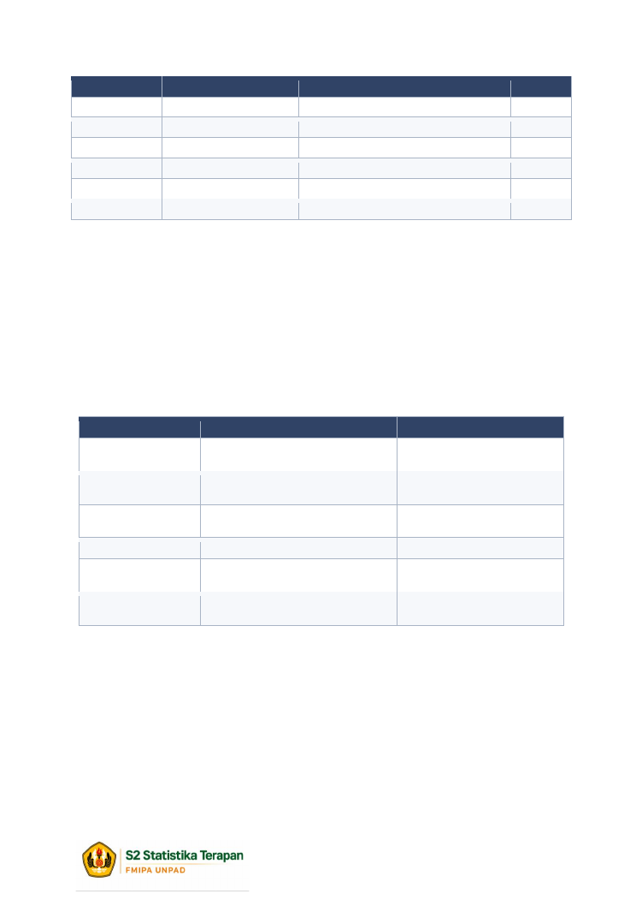
10
Semester
Kode/Status
Mata Kuliah/Komponen
SKS
Semester II
140720-UND202522001
Statistika Nonparametrik dan Pemodelan Fleksibel
3
Semester II
140720-UND202522002
Penambangan Data dan Kecerdasan Buatan
3
Semester II
Pilihan
Empat mata kuliah pilihan dari katalog bidang kajian
12
Semester III
140720-UND202503002
Seminar Usulan Riset (SUR)
3
Semester III
140720-UND202503003
Seminar Kemajuan Riset (SKR)
6
Semester III
140720-UND202503005
Sidang Akhir Magister (Tesis)
9
Sumber: Rancangan Kurikulum OBE 2025; total 54 SKS.
6.3 Mata Kuliah Pilihan
Mahasiswa menempuh empat mata kuliah pilihan (12 SKS) dari katalog: Pemodelan Persamaan
Struktural; Analisis Spasial; Analisis Multilevel dan Longitudinal; Model Linear Generalisasi;
Matematika Keuangan; Desain Eksperimen; Teori Antrian; Matematika Aktuaria 1 dan 2; Analisis
Survival; Teori Risiko; Epidemiologi; Pembelajaran Mesin; Analisis Image/Citra; Analisis Teks; Basis
Data; dan Sampling Survey. Pemilihan dilakukan melalui academic advising agar paket mata kuliah
selaras dengan topik tesis dan profil karier.
6.4 Penguatan Konsentrasi Sains Data
Tabel 11. Penguatan konsentrasi Sains Data
Komponen
Mata Kuliah/Proses
Kompetensi
Fondasi statistik
Statistika Inferensial; Regresi; Multivariat; Deret
Waktu; Proses Stokastik
Menjaga validitas inferensi,
ketidakpastian, dan interpretabilitas.
Komputasi
Komputasi Statistik dan Optimasi; Basis Data
Algoritma, optimasi, manajemen data,
reproducibility.
AI dan pembelajaran mesin
Penambangan Data dan Kecerdasan Buatan;
Pembelajaran Mesin
Pemodelan prediktif, evaluasi model, dan
penggunaan AI yang bertanggung jawab.
Data tidak terstruktur
Analisis Teks; Analisis Citra
Ekstraksi informasi dari teks dan citra.
Aplikasi domain
Analisis Spasial; Epidemiologi; Keuangan;
Aktuaria; Sosial
Penerapan metodologi sains data pada
masalah nyata.
Komunikasi dan etika
Proyek, presentasi, SUR-SKR-SAM
Komunikasi hasil, transparansi, etika data,
dan integritas akademik.
Sumber: Pemetaan Kurikulum OBE 2025 dan masukan pengguna lulusan.
Konsentrasi Sains Data tidak perlu dipahami sebagai pemisahan administratif yang kaku.
Konsentrasi dapat ditetapkan melalui paket mata kuliah pilihan dan topik tesis. Dengan pendekatan ini,
mahasiswa tetap memperoleh identitas Magister Statistika Terapan, sementara transkrip, surat keterangan
pendamping ijazah, atau portofolio dapat menunjukkan penguatan kompetensi Sains Data.
6.5 Jalur Magister Berbasis Riset
Kurikulum 2025 juga merumuskan jalur by research yang menekankan kompetensi penelitian,
systematic literature review, asistensi perkuliahan, pembicara seminar nasional/internasional, publikasi,
dan tahapan tesis. Implementasinya memerlukan pedoman terpisah mengenai seleksi, rekognisi
kompetensi, pembimbingan, keluaran publikasi, serta pembagian beban antarsemester. Naskah ini
berfokus pada perubahan struktur coursework, tetapi prinsip CPL dan quality assurance berlaku pada
kedua jalur.
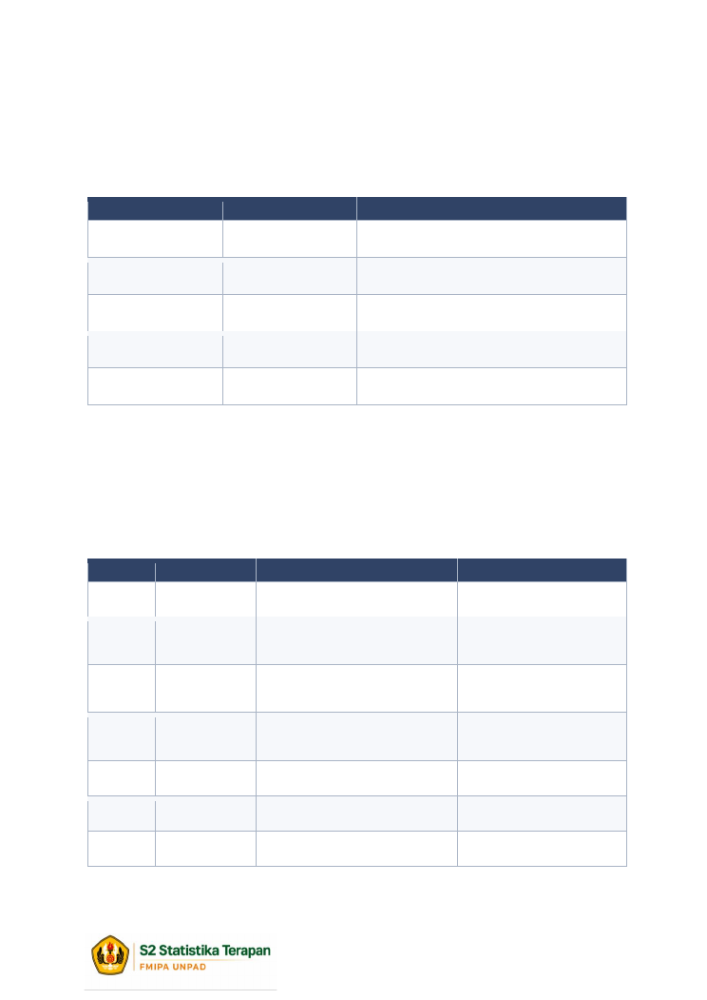
11
BAB VII PROFIL LULUSAN DAN CAPAIAN
PEMBELAJARAN
7.1 Profil Lulusan
Tabel 13. Perubahan profil lulusan
Profil
Status 2025
Penguatan
Akademisi
Tetap
Menjalankan pendidikan, penelitian, dan pengabdian;
membutuhkan penguasaan teori, riset, komunikasi, dan etika.
Peneliti
Tetap dan diperkuat
SUR-SKR-SAM membentuk proses riset berjenjang dan lebih
terpantau.
Konsultan
Tetap
Mata kuliah pilihan dan proyek terapan memperkuat
kemampuan rekomendasi berbasis data.
Praktisi Statistika dan Sains
Data
Dipertegas
Konsentrasi Sains Data, AI, komputasi, dan komunikasi
menjawab kebutuhan industri/pemerintah.
Studi lanjut doktor
Diperjelas sebagai prospek
Fondasi teori, publikasi, dan pengalaman riset mempersiapkan
lulusan menuju jenjang doktor.
Sumber: Kurikulum OBE 2023, Kurikulum OBE 2025, Alumni Job Prospects, dan benchmarking.
7.2 Capaian Pembelajaran Lulusan
Tujuh CPL pada Kurikulum 2023 pada dasarnya masih relevan dan dipertahankan dalam Kurikulum
2025. Perubahan utama terletak pada penguatan konteks, bukti asesmen, dan pemetaan mata kuliah.
Penambahan SKR memperkuat CPL riset, sedangkan mata kuliah pilihan dan Sains Data memperluas
bukti pencapaian CPL analisis dan komputasi.
Tabel 12. Perubahan dan penguatan CPL
CPL
Status
Substansi
Penguatan Implementasi
CPL-1
Tetap
Penguasaan dan pengembangan konsep dasar
statistika, inovasi, serta karya ilmiah.
Dipertahankan sebagai core akademik
Level 8.
CPL-2
Tetap
Perancangan, pemilihan, pengembangan, dan
desain ulang metode pengumpulan data.
Diperkuat melalui desain
survei/eksperimen dan asesmen berbasis
proyek.
CPL-3
Tetap dengan perluasan
eksplisit
Pengelolaan dan analisis data serta penyelesaian
masalah pada bisnis-industri, sosial, aktuaria,
biostatistik, dan sains data.
Konsentrasi Sains Data dipertegas.
CPL-4
Tetap
Pengembangan algoritma komputasi dengan
perangkat lunak statistika.
Diperkuat melalui AI, ML, basis data,
analisis teks/citra, dan reproducible
workflow.
CPL-5
Tetap
Berpikir logis, kritis, sistematis, inovatif, dan
mandiri dalam mengelola riset.
SKR menjadi titik kendali ketercapaian
riset.
CPL-6
Tetap
Jejaring kerja sama dan komunikasi efektif.
Diperkuat melalui seminar, kerja tim, dan
kemitraan.
CPL-7
Tetap
Ketakwaan, etika, integritas, kepedulian sosial-
lingkungan, dan kepemimpinan.
Diintegrasikan ke etika data, integritas
riset, dan tanggung jawab AI.
Sumber: Dokumen CPL dan analisis Kurikulum OBE 2023-2025.

12
7.3 Matriks CPL-Mata Kuliah
Setiap CPL harus dinilai melalui beberapa mata kuliah dan tidak bergantung pada satu asesmen
tunggal. CPL-1 dan CPL-5 dinilai melalui core teori dan seluruh tahapan tesis; CPL-2 melalui desain
pengumpulan data, sampling, eksperimen, dan proposal; CPL-3 melalui mata kuliah terapan dan tesis;
CPL-4 melalui komputasi, AI, dan proyek kode; CPL-6 melalui kerja tim, presentasi, dan interaksi
pemangku kepentingan; CPL-7 melalui integritas akademik, etika data, dan kepemimpinan. Matriks rinci
perlu ditempatkan dalam dokumen kurikulum final serta diselaraskan dengan RPS.
BAB VIII STRATEGI PEMBELAJARAN DAN ASESMEN
8.1 Strategi Pembelajaran
Case-based learning menggunakan persoalan pemerintah, bisnis, kesehatan, sosial, lingkungan, dan
industri.
Project-based learning dengan data nyata, dokumentasi kode, visualisasi, dan laporan yang dapat
direproduksi.
Research-based learning yang dimulai dari identifikasi masalah, telaah literatur, desain, analisis,
validasi, sampai diseminasi.
Blended learning yang menjaga interaksi akademik, fleksibilitas mahasiswa bekerja, serta akses
materi digital.
Academic advising untuk memastikan koherensi pilihan mata kuliah, topik tesis, dan profil karier.
8.2 Asesmen Mata Kuliah
Asesmen harus menggunakan rubrik yang menghubungkan CPMK dan CPL. Bukti dapat berupa
ujian analitis, tugas pemodelan, kode, laporan reproducible, presentasi, telaah artikel, proyek kelompok,
dan refleksi etika. Untuk mata kuliah komputasi, penilaian tidak hanya pada akurasi prediksi, tetapi juga
validasi, dokumentasi, interpretasi, fairness, privasi, dan komunikasi.
8.3 Asesmen SUR-SKR-SAM
SUR: kualitas masalah dan kebaruan, ketepatan desain, kesiapan data, etika, kelayakan jadwal, dan
kemampuan presentasi.
SKR: ketercapaian milestone, kualitas data, ketepatan implementasi metode, validasi, interpretasi
hasil awal, integritas proses, dan rencana penyelesaian.
SAM: kontribusi ilmiah, konsistensi tujuan-metode-hasil, kualitas argumentasi, keterbatasan,
dampak, kualitas naskah, dan kemampuan mempertahankan tesis.
8.4 Integrasi AI Generatif
Penggunaan AI generatif perlu diatur sebagai alat bantu yang transparan dan bertanggung jawab.
Mahasiswa wajib memverifikasi keluaran, menjaga kerahasiaan data, mendokumentasikan penggunaan,
dan tidak menyerahkan keputusan metodologis kepada sistem otomatis tanpa evaluasi ilmiah. Kebijakan
program studi perlu membedakan bantuan yang diperbolehkan, penggunaan yang harus diungkapkan,
dan pelanggaran integritas akademik.
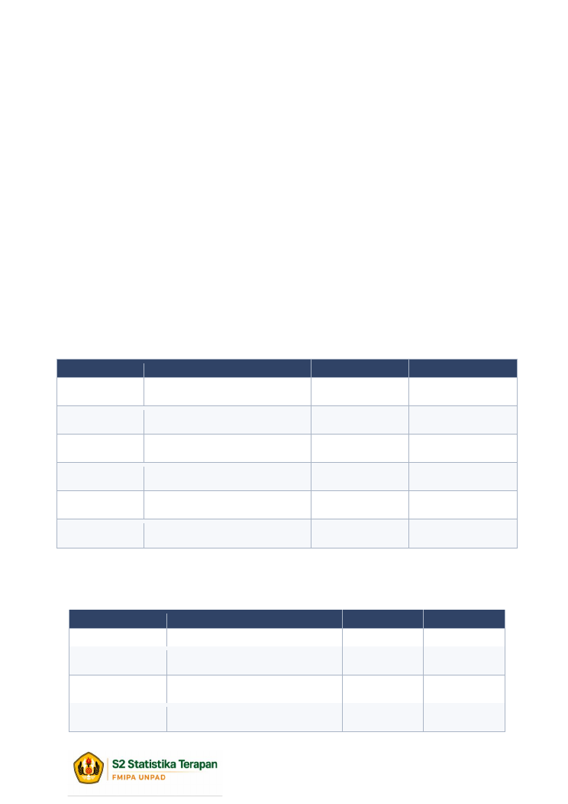
13
BAB IX IMPLEMENTASI, TRANSISI, DAN PENJAMINAN
MUTU
9.1 Prinsip Transisi
Kurikulum OBE 2025 berlaku untuk mahasiswa baru setelah tanggal penetapan. Mahasiswa yang
telah mengikuti Kurikulum 2023 pada prinsipnya menyelesaikan studi berdasarkan kurikulum
angkatannya. Perpindahan ke Kurikulum 2025 hanya dilakukan apabila menguntungkan mahasiswa,
tidak memperpanjang studi secara tidak wajar, dan didukung matriks ekuivalensi serta keputusan
akademik yang terdokumentasi.
9.2 Ekuivalensi Mata Kuliah
Mata kuliah dengan perubahan kode atau nomenklatur tetapi substansi dan CPMK setara dapat
diekuivalensikan penuh. Perubahan yang substantif, seperti Analisis Data Kategori Tingkat Lanjut
menjadi Model Linear Generalisasi, memerlukan telaah RPS dan dapat menghasilkan ekuivalensi penuh,
parsial, atau kewajiban matrikulasi. SKR tidak dibebankan kepada mahasiswa lama yang secara sah
mengikuti struktur tesis Kurikulum 2023, kecuali terdapat keputusan transisi khusus yang disepakati.
9.3 Rencana Implementasi
Tabel 14. Rencana implementasi Kurikulum OBE 2025
Waktu
Kegiatan
Penanggung Jawab
Keluaran
Mei-Juni 2025
Finalisasi naskah akademik dan struktur 54 SKS
Tim kurikulum
Dokumen konsisten, matriks
ekuivalensi, berita acara rapat.
Juni-Juli 2025
Pengesahan tingkat program studi, departemen,
fakultas, dan universitas
KPS/Departemen/FMIPA
SK/keputusan kurikulum dan
pedoman transisi.
Juli-Agustus 2025
Penyusunan/penyesuaian RPS, rubrik CPL, rubrik
SUR-SKR-SAM, dan SIAT
Koordinator mata
kuliah/GKM
RPS OBE dan asesmen siap
digunakan.
Agustus 2025
Sosialisasi kepada dosen, mahasiswa, tenaga
kependidikan, alumni, dan mitra
Program studi
Materi sosialisasi dan FAQ
transisi.
Semester Ganjil
2025/2026
Implementasi untuk mahasiswa baru
Program studi
Perkuliahan sesuai struktur 54
SKS.
Akhir Tahun Akademik
2025/2026
Evaluasi implementasi pertama
GKM/Program studi
Laporan ketercapaian CPL dan
rekomendasi perbaikan.
Sumber: Rencana kerja tim kurikulum.
9.4 Monitoring dan Evaluasi
Tabel 15. Indikator monitoring dan evaluasi kurikulum
Dimensi
Indikator
Frekuensi
Sumber Data
Kepatuhan struktur
100% KRS sesuai paket dan prasyarat
Setiap semester
Audit SIAT dan KRS
Ketercapaian CPL
>= 80% mahasiswa mencapai ambang setiap CPL
Setiap semester/tahun
Rubrik mata kuliah dan
agregasi CPL
Kemajuan tesis
>= 90% mahasiswa memenuhi milestone SUR-SKR-
SAM tepat waktu
Bulanan/semester
Logbook dan
dashboard tesis
Kualitas tesis
Penurunan revisi mayor dan peningkatan output
publikasi/presentasi
Tahunan
Rubrik SAM dan data
publikasi
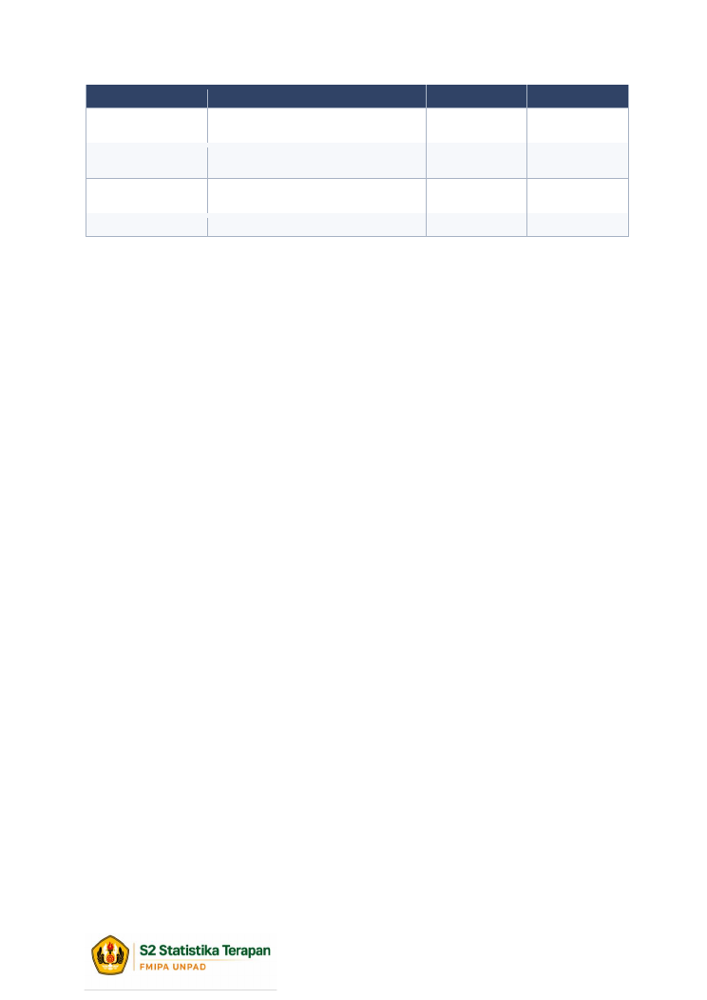
14
Dimensi
Indikator
Frekuensi
Sumber Data
Kepuasan mahasiswa
>= 80% puas/sangat puas
Setiap semester
Survei pembelajaran
dan layanan
Kepuasan pengguna lulusan
>= 80% baik/sangat baik pada seluruh kompetensi
Dua tahunan
Survei pengguna
lulusan
Relevansi Sains Data/AI
Tidak ada kategori kompetensi yang dominan pada
level cukup
Tahunan/dua tahunan
Survei alumni dan
pengguna
Masa studi
Median <= 2 tahun dengan tetap menjaga mutu
Tahunan
Data akademik
Sumber: Rancangan sistem penjaminan mutu kurikulum.
Evaluasi tahunan membahas data CPL, distribusi nilai, beban mahasiswa, masa studi, kemajuan
tesis, kepuasan, publikasi, dan umpan balik dosen. Evaluasi komprehensif dilakukan secara berkala
dengan melibatkan pemangku kepentingan. Perbaikan minor dapat dilakukan pada RPS dan rubrik,
sedangkan perubahan CPL, struktur, atau jumlah SKS harus melalui proses akademik formal.
9.5 Pengendalian Dokumen
Seluruh tabel struktur, kode, bobot, semester, dan status mata kuliah harus memiliki satu master data
yang digunakan konsisten pada dokumen kurikulum, RPS, pedoman akademik, SIAT, laman program
studi, dan materi sosialisasi. Setiap revisi harus memiliki nomor versi, tanggal, pengesah, dan catatan
perubahan.
BAB X PENUTUP
10.1 Kesimpulan
Perubahan Kurikulum OBE 2023 menjadi Kurikulum OBE 2025 memiliki dasar yuridis dan
akademik yang kuat. Struktur 54 SKS memenuhi Permendikbudristek Nomor 53 Tahun 2023 dan
Peraturan Rektor Unpad Nomor 10 Tahun 2025. Rekonstruksi dilakukan dengan mempertahankan 24
SKS fondasi wajib, mewajibkan 12 SKS mata kuliah pilihan, dan membentuk 18 SKS rangkaian tesis
SUR-SKR-SAM.
Kurikulum baru memperkuat spesialisasi, Sains Data, dan pengendalian mutu tesis tanpa
meninggalkan identitas statistika. Hasil survei pengguna mendukung penguatan AI, teknologi,
komunikasi, dan adaptasi, sementara benchmarking mengonfirmasi pentingnya teori, komputasi, aplikasi
lintas domain, dan kemampuan komunikasi. Dengan implementasi berbasis RPS OBE, rubrik, academic
advising, logbook tesis, dan evaluasi berkala, Kurikulum OBE 2025 diharapkan meningkatkan kualitas
serta daya saing lulusan.
10.2 Rekomendasi
7.
Mengesahkan struktur 54 SKS jalur coursework dengan komposisi 24 SKS wajib, 12 SKS pilihan,
SUR 3 SKS, SKR 6 SKS, dan SAM 9 SKS.
8.
Menetapkan distribusi semester yang tunggal dan konsisten pada seluruh dokumen.
9.
Mengesahkan matriks ekuivalensi dan pedoman transisi mahasiswa.
10.
Membakukan nomenklatur bahasa Indonesia, terutama Analisis Citra, Basis Data, dan istilah terkait
sampling/survival.
11.
Menetapkan rubrik SUR, SKR, SAM, rubrik CPL, logbook tesis, dan dashboard monitoring.
12.
Mengintegrasikan etika data dan penggunaan AI yang bertanggung jawab pada RPS, asesmen, dan
tesis.
13.
Melakukan evaluasi implementasi setelah satu tahun akademik.
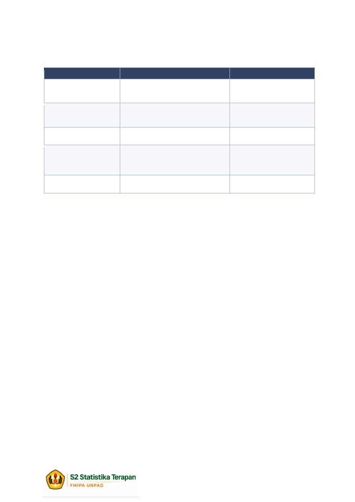
15
10.3 Informasi yang Memerlukan Konfirmasi Formal
Tabel 16. Informasi yang perlu dikonfirmasi sebelum pengesahan
Isu
Temuan
Tindak Lanjut
Inkonsistensi bobot SUR dan tesis
dalam Kurikulum 2023
Tabel daftar mata kuliah menuliskan SUR 2 SKS dan
tesis 6 SKS, sedangkan struktur akhir menuliskan 3
dan 9 SKS.
Gunakan struktur 36 SKS (SUR 3, SAM
9) sebagai acuan implementasi dan
koreksi tabel historis.
Penempatan SUR/SKR pada
Kurikulum 2025
Tabel tertentu menempatkan SUR/SKR pada semester
II, sedangkan narasi dan diagram menempatkan paket
tesis 18 SKS di semester III.
Tetapkan satu struktur resmi 18-18-18
SKS atau jelaskan mekanisme lintas
semester.
Nomenklatur Analisis Image
Campuran bahasa Indonesia dan Inggris.
Disarankan menjadi Analisis Citra untuk
konsistensi.
Nomenklatur Sampling Survey dan
Analisis Survival
Masih campuran bahasa.
Pertimbangkan Survei
Sampling/Penarikan Sampel dan Analisis
Ketahanan Hidup sesuai keputusan
akademik.
Matriks ekuivalensi Analisis Data
Kategori-Model Linear Generalisasi
Perubahan berpotensi substantif.
Verifikasi CPMK dan bahan kajian
sebelum menetapkan ekuivalensi penuh.
Sumber: Audit konsistensi dokumen sumber.
DAFTAR PUSTAKA DAN DOKUMEN RUJUKAN
Biggs, J., dan Tang, C. (2011). Teaching for Quality Learning at University. Edisi ke-4. Open University
Press.
Kementerian Pendidikan, Kebudayaan, Riset, dan Teknologi Republik Indonesia. (2023). Peraturan
Menteri Pendidikan, Kebudayaan, Riset, dan Teknologi Nomor 53 Tahun 2023 tentang Penjaminan
Mutu Pendidikan Tinggi.
Program Studi Magister Statistika Terapan FMIPA Universitas Padjadjaran. (2023). Kurikulum OBE
2023.
Program Studi Magister Statistika Terapan FMIPA Universitas Padjadjaran. (2024). Alumni Job
Prospects.
Program Studi Magister Statistika Terapan FMIPA Universitas Padjadjaran. (2024). Benchmarking
Report.
Program Studi Magister Statistika Terapan FMIPA Universitas Padjadjaran. (2024). Evaluation Report
of the Applied Statistics Master’s Program Curriculum 2023.
Program Studi Magister Statistika Terapan FMIPA Universitas Padjadjaran. (2024). Satisfaction Survey
of Facilities and Infrastructure Standards and Academic Services.
Program Studi Magister Statistika Terapan FMIPA Universitas Padjadjaran. (2025). Rancangan
Kurikulum OBE 2025.
Republik Indonesia. (2012). Undang-Undang Nomor 12 Tahun 2012 tentang Pendidikan Tinggi.
Republik Indonesia. (2012). Peraturan Presiden Nomor 8 Tahun 2012 tentang Kerangka Kualifikasi
Nasional Indonesia.
Spady, W. G. (1994). Outcome-Based Education: Critical Issues and Answers. American Association of
School Administrators.
Universitas Padjadjaran. (2021). Peraturan Rektor Nomor 43 Tahun 2021 tentang Kerangka Kurikulum
Universitas Padjadjaran.

16
Universitas Padjadjaran. (2025). Peraturan Rektor Nomor 10 Tahun 2025 tentang Penyelenggaraan
Pendidikan Program Magister di Universitas Padjadjaran.
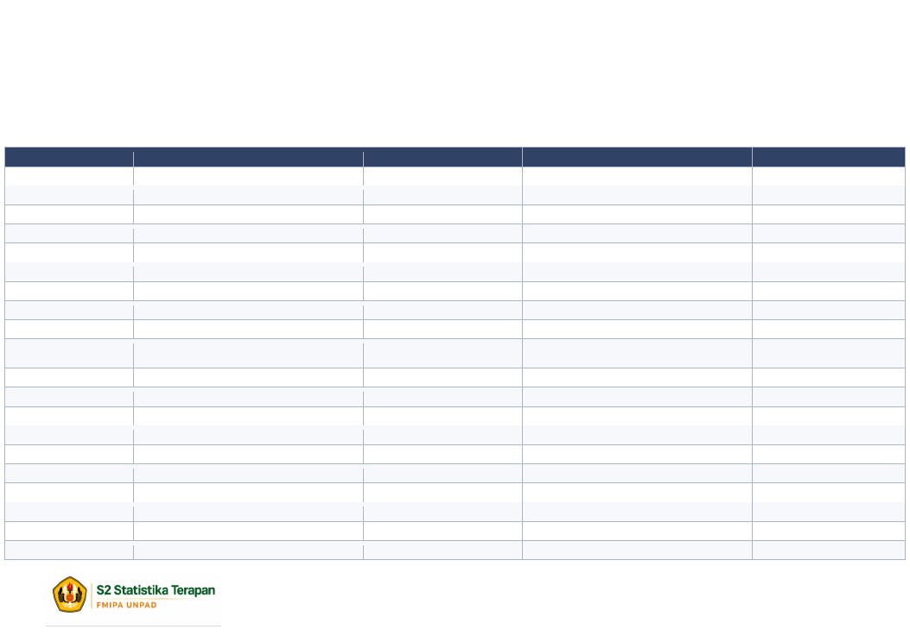
Naskah Akademik Perubahan Kurikulum OBE 2023-2025
17
LAMPIRAN A. MATRIKS EKUIVALENSI MATA KULIAH
Matriks berikut merupakan rekomendasi akademik awal. Ekuivalensi final harus diverifikasi menggunakan RPS, CPMK, bahan kajian, dan bukti pembelajaran masing-
masing mata kuliah.
Lampiran Tabel A. Matriks ekuivalensi Kurikulum OBE 2023 dan OBE 2025
Kode 2023
Nama 2023
Kode 2025
Nama 2025
Bentuk Perubahan
D20B.101
Statistik Inferensi
140720-UND202511001
Statistika Inferensial
Nomenklatur dan kode
D20B.105
Komputasi Statistik dan Optimasi
140720-UND202511002
Komputasi Statistik dan Optimasi
Kode
D20B.102
Analisis Data Multivariat Tingkat Lanjut
140720-UND202511003
Analisis Multivariat Tingkat Lanjut
Penyederhanaan nama dan kode
D20B.103
Analisis Regresi Tingkat Lanjut
140720-UND202511004
Analisis Regresi Tingkat Lanjut
Kode
D20B.104
Proses Stokastik Tingkat Lanjut
140720-UND202511005
Proses Stokastik Tingkat Lanjut
Kode
D20B.107
Analisis Data Deret Waktu Tingkat Lanjut
140720-UND202511006
Analisis Deret Waktu Tingkat Lanjut
Penyederhanaan nama dan kode
D20B.210
Statistika Non Parametrik dan Flexible Modeling
140720-UND202522001
Statistika Nonparametrik dan Pemodelan Fleksibel
Indonesianisasi dan pembakuan ejaan
D20B.220
Data Mining and Artificial Intelligence
140720-UND202522002
Penambangan Data dan Kecerdasan Buatan
Indonesianisasi
D20B.206
Structural Equation Modeling
140720-UND202522003
Pemodelan Persamaan Struktural
Indonesianisasi
D20B.222
Analisis Data Spasial Tingkat Lanjut
140720-UND202522004
Analisis Spasial
Penyederhanaan nama; cakupan silabus perlu
dipastikan tetap level magister
-
-
140720-UND202522005
Analisis Multilevel dan Longitudinal
Mata kuliah baru
D20B.209
Analisis Data Kategori Tingkat Lanjut
140720-UND202522006
Model Linear Generalisasi
Reformulasi substansi/ekuivalensi bersyarat
D20B.212
Matematika Keuangan
140720-UND202522007
Matematika Keuangan
Kode
D20B.211
Desain Eksperimen
140720-UND202522008
Desain Eksperimen
Kode
D20B.207
Teori Antrian
140720-UND202522009
Teori Antrian
Kode
D20B.217
Matematika Aktuaria 1
140720-UND202522010
Matematika Aktuaria 1
Kode
D20B.218
Matematika Aktuaria 2
140720-UND202522011
Matematika Aktuaria 2
Kode
D20B.219
Survival Analysis
140720-UND202522012
Analisis Survival
Indonesianisasi parsial
D20B.221
Teori Risiko
140720-UND202522013
Teori Risiko
Kode
D20B.214
Epidemiologi
140720-UND202522014
Epidemiologi
Kode
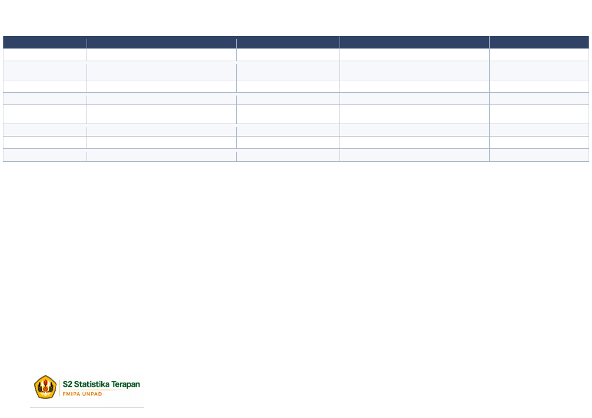
Naskah Akademik Perubahan Kurikulum OBE 2023-2025
18
Kode 2023
Nama 2023
Kode 2025
Nama 2025
Bentuk Perubahan
D20B.223
Machine Learning
140720-UND202522015
Pembelajaran Mesin
Indonesianisasi
D20B.224
Image Processing
140720-UND202522016
Analisis Image
Perubahan nama; disarankan dibakukan
menjadi Analisis Citra
D20B.225
Text Analytics
140720-UND202522017
Analisis Teks
Indonesianisasi
D20B.226
Database
140720-UND202522018
Basis Data
Indonesianisasi
D20B.208
Sampling Survey
140720-UND202522019
Sampling Survey
Kode; padanan Indonesia dapat
dipertimbangkan
D20B.321
Seminar Usulan Riset
140720-UND202503002
Seminar Usulan Riset (SUR)
Kode dan konsistensi bobot 3 SKS
-
-
140720-UND202503003
Seminar Kemajuan Riset (SKR)
Tahap tesis baru 6 SKS
D20B.322
Tesis
140720-UND202503005
Sidang Akhir Magister (Tesis)
Penegasan tahap akhir dan kode
Sumber: Analisis komparatif daftar mata kuliah Kurikulum 2023 dan Kurikulum 2025.
LAMPIRAN B. CATATAN AUDIT DOKUMEN
Audit dilakukan untuk memastikan bahwa perubahan dapat ditelusuri. Catatan utama meliputi inkonsistensi bobot SUR dan tesis pada beberapa tabel Kurikulum 2023,
penempatan SUR/SKR yang berbeda pada bagian Kurikulum 2025, dan nomenklatur yang belum sepenuhnya berbahasa Indonesia. Seluruh catatan harus diselesaikan pada
dokumen final dan master data kurikulum.
LAMPIRAN C. RINGKASAN KEPUTUSAN YANG DIUSULKAN
1.
Kurikulum OBE 2025 diberlakukan bagi mahasiswa baru Tahun Akademik 2025/2026 setelah memperoleh pengesahan formal.
2.
Beban belajar jalur coursework ditetapkan 54 SKS dengan masa tempuh kurikulum tiga semester.
3.
Mahasiswa menempuh empat mata kuliah pilihan yang disetujui pembimbing akademik.
4.
Proses tesis terdiri atas SUR, SKR, dan SAM dengan rubrik dan logbook yang terstandar.
5.
Mahasiswa Kurikulum 2023 dilindungi melalui ketentuan transisi dan tidak otomatis diwajibkan menambah SKS.
6.
Setiap perubahan minor maupun mayor didokumentasikan dalam sistem penjaminan mutu.